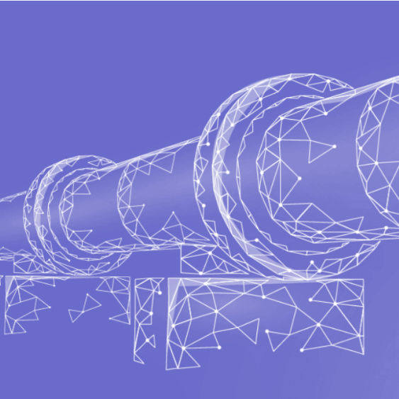

retrospectively create software development process and
tooling keep the clinical pipeline already in use
changes to process and deployment, not to algorithms
minimize regulatory hindrance on development
create design documentation to help communicate to regulators and team members.
ensure the labs software is able to run anywhere at anytime at any scale
ensure issues with software are reported, fixed, and never regressed
ensure decision makers have insight into design and features of the software
track development - be it bug fixes or new features
safely upgrade, bug fix, or enhance the software with robust testing infrastructure
communicate [testing process] and strategy easily with regulators, clinicians, and stakeholders
software gives the best results and same analysis for every person
remove manual steps from clinical processes
allow manual steps to be accessed easily for debugging and R&D proposes
ensure every patient can get analysis re-run when software is enhanced or after a bug fix
ensure software is robust against supply chain attacks or malicious software updates
software gives the best results and same analysis for every person
remove manual steps from clinical processes
allow manual steps to be accessed easily for debugging and R&D proposes
ensure every patient can get analysis re-run when software is enhanced or after a bug fix
ensure software is robust against supply chain attacks or malicious software updates



© 2023 Karilian Biotechnologia sl